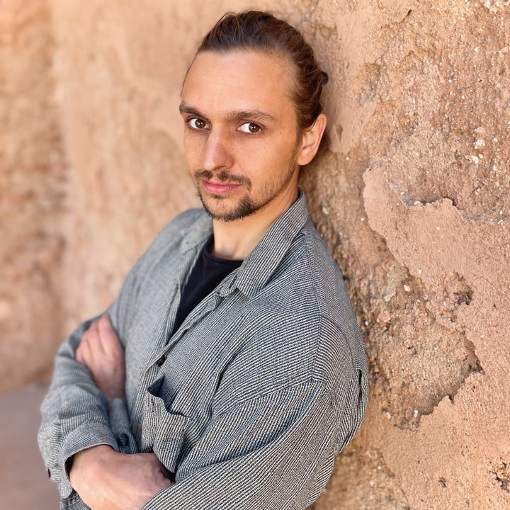

AboutÜber

I am a postdoc in the Palaeoclimate Dynamics group at the University of Potsdam. I study how water comes and goes in drylands and East African rift lakes over long timescales — and how to reconstruct it from sediments, models and time series.
Ich arbeite als Postdoc in der AG Paläoklimadynamik an der Universität Potsdam. Mich interessiert, wie Wasser in Trockengebieten und ostafrikanischen Riftseen über lange Zeiträume kommt und geht — und wie man das aus Sedimenten, Modellen und Zeitreihen rekonstruiert.
Alongside that I write about climbing geology, experiment with turning climate data into sound, and collect occasional notes.
Daneben schreibe ich über Klettergeologie, experimentiere mit der Vertonung von Klimadaten und sammle hier gelegentlich Notizen.
BackgroundWerdegang
- since 2022seit 2022
Postdoc, Palaeoclimate Dynamics group, University of Potsdam (Campus Golm) Postdoc, AG Paläoklimadynamik, Universität Potsdam (Campus Golm) - 2019 – 2022
PhD (Dr. rer. nat.), University of Tübingen & Senckenberg Centre for Human Evolution and Paleoenvironment — scholarship of the Stiftung der deutschen Wirtschaft Promotion (Dr. rer. nat.), Universität Tübingen & Senckenberg Centre for Human Evolution and Paleoenvironment — Stipendium der Stiftung der deutschen Wirtschaft - 2014 – 2018
M.Sc. Physical Geography, University of Leipzig M.Sc. Physische Geographie, Universität Leipzig - 2010 – 2014
B.Sc. Geography, University of Leipzig B.Sc. Geographie, Universität Leipzig
Peer reviewGutachtertätigkeit
Reviewer for scientific journals (verified via ORCID):
Gutachter für Fachzeitschriften (über ORCID verifiziert):
- Nature Communications
- Nature Geoscience
- Quaternary International
- International Journal of Earth Sciences
- Palaeogeography, Palaeoclimatology, Palaeoecology
Talks & mediaVorträge & Medien
A podcast conversation about my doctoral research, my path into science, and what fascinates me at the interface of anthropology and palaeoenvironmental research (University of Potsdam).
Ein Podcast-Gespräch über meine Promotion, meinen Werdegang und was mich an der Schnittstelle von Anthropologie und Paläoumweltforschung fasziniert (Universität Potsdam).
Listen on PanoptoAuf Panopto anhören University of Potsdam · opens in a new tabUniversität Potsdam · öffnet in neuem TabResearch & publicationsForschung & Publikationen
Data-driven palaeoclimate researcher focused on climate dynamics, system coupling, and human–environment interactions. I integrate sediment records, mechanistic and data-driven models, and time-series analysis to understand climate and Earth-system dynamics across scales.
Datengetriebener Paläoklimaforscher mit Fokus auf Klimadynamik, System-Kopplung und Mensch-Umwelt-Interaktionen. Ich verbinde Sedimentarchive, mechanistische und datengetriebene Modelle sowie Zeitreihenanalyse, um Klima- und Erdsystemdynamik über verschiedene Skalen hinweg zu verstehen.
Current direction: metaparameters in Earth-system science — measures that make environmental processes comparable and translatable across scales, including their link to the biosphere and human systems.
Aktuelle Richtung: Metaparameter in der Erdsystemwissenschaft — Maße, die Umweltprozesse skalenübergreifend vergleichbar und übersetzbar machen, samt ihrer Kopplung an die Biosphäre und den Menschen.
Regional focus: southern Ethiopia (Chew Bahir basin), extended to pan-African climate coupling and comparative drylands (Willandra Lakes, Australia). 14 peer-reviewed papers.
Regionaler Schwerpunkt: Südäthiopien (Chew-Bahir-Becken), erweitert auf pan-afrikanische Klimakopplung und vergleichende Trockengebiete (Willandra Lakes, Australien). 14 begutachtete Arbeiten.
- 2026
- Foerster, V., Asrat, A., Bronk Ramsey, C., Brown, E. T., Deino, A., Erbello, A., Fischer, M. L., Gebregiorgis, D., Junginger, A., Kaboth-Bahr, S., Lane, C. S., Opitz, S., Noren, A., Roberts, H. M., Tiedemann, R., Vidal, C.-M., Viehberg, F., Vogelsang, R., Zachow, C., Zinaye, B., Cohen, A. S., Lamb, H. F., Schaebitz, F. & Trauth, M. H. (2026). Scientific deep drilling in the Chew Bahir basin: advantages and pitfalls of two overlapping sediment cores. Scientific Drilling, 35, 61–81.
- Hein, M., Kasper, T., Samudra, A. B., Theuerkauf, M., Fischer, M. L., … Urban, B. (2026). Towards an 'absolute' timing of biostratigraphic and environmental phases from the Saalian late glacial to the Weichselian pleniglacial in central Europe. Boreas. Advance online publication.
- Zielhofer, C., Rabiger-Völlmer, J., Westermann, H., Fischer, M. L., Schneider, B., Lindauer, S., Khosravichenar, A., Bauch, M., Pohle, M. & Werban, U. (2026). Fluvial deposits of the Ahr river (western Germany) reveal recurring high-magnitude flood events over the last 1,500 years. Earth Surface Processes and Landforms, 51(1).
- 2025
- Fitzsimmons, K. E., Fischer, M. L., Smith, T., Lauer, T., Nowatzki, M., Mishra, K. & Murray-Wallace, C. V. (2025). Long-term hydrologic connectivity on the Australian dryland margins: evidence from the Willandra Lakes World Heritage Area over the last 60 ky. Journal of Quaternary Science, 40(5), 876–892.
- Gosling, W. D., Chevalier, M., Fischer, M. L., Holewijn, M., Finch, J., Gil-Romera, G., Hill, T., Houngnon, A., Leonardi, M., Manica, A. & Kaboth-Bahr, S. (2025). A multi-model approach to the spatial and temporal characterization of the African Humid Period. Quaternary International, 744, 109933.
- 2024
- Fischer, M. L., Munz, P. M., Asrat, A., Foerster, V., Kaboth-Bahr, S., Marwan, N., Schaebitz, F., Schwanghart, W. & Trauth, M. H. (2024). Spatio-temporal variations of climate along possible African-Arabian routes of H. sapiens expansion. Quaternary Science Advances, 14, 100174.
- Trauth, M. H., Asrat, A., Fischer, M. L., Foerster, V., Kaboth-Bahr, S., Lamb, H. F., Marwan, N., Roberts, H. M. & Schaebitz, F. (2024). Combining orbital tuning and direct dating approaches to age-depth model development for Chew Bahir, Ethiopia. Quaternary Science Advances, 15, 100208.
- Trauth, M. H., Asrat, A., Fischer, M. L., Hopcroft, P. O., Foerster, V., Kaboth-Bahr, S., Kindermann, K., Lamb, H. F., Marwan, N., Maslin, M. A., Schaebitz, F. & Valdes, P. J. (2024). Early warning signals of the termination of the African Humid Period(s). Nature Communications, 15(1), 3697.
- 2023
- Scholz, S., Westermann, H., Hegemann, R., Popp, M., Richter, T., Fischer, M. L. & Zielhofer, C. (2023). An international stratigraphic dataset and geological map of the Ahr River catchment, Germany. Data in Brief, 51, 109677.
- 2022
- Hildebrand, E., Grillo, K. M., Chritz, K. L., Fischer, M. L., Goldstein, S. T., Janzen, A., Junginger, A., Kinyanjui, R. N., Ndiema, E., Sawchuk, E., Beyin, A. & Pfeiffer, S. K. (2022). Buffering new risks? Environmental, social and economic changes in the Turkana Basin during and after the African Humid Period. The Holocene, 32(12), 1373–1392.
- Markowska, M., Martin, A. N., Vonhof, H. B., Guinoiseau, D., Fischer, M. L., Zinaye, B., Galer, S. J. G., Asrat, A. & Junginger, A. (2022). A multi-isotope and modelling approach for constraining hydro-connectivity in the East African Rift System, southern Ethiopia. Quaternary Science Reviews, 279, 107387.
- von Suchodoletz, H., Kirkitadze, G., Koff, T., Fischer, M. L., Poch, R. M., Khosravichenar, A., Schneider, B., Glaser, B., Lindauer, S., Hoth, S., Skokan, A., Navrozashvili, L., Lobjanidze, M., Akhalaia, M., Losaberidze, L. & Elashvili, M. (2022). Human-environmental interactions and seismic activity in a Late Bronze to Early Iron Age settlement center in the southeastern Caucasus. Frontiers in Earth Science, 10, 964188.
- 2021
- Fischer, M. L., Bachofer, F., Yost, C. L., Bludau, I. J. E., Schepers, C., Foerster, V., Lamb, H., Schäbitz, F., Asrat, A., Trauth, M. H. & Junginger, A. (2021). A phytolith supported biosphere-hydrosphere predictive model for southern Ethiopia. Geosciences, 11(10), 418.
- 2020
- Fischer, M. L., Markowska, M., Bachofer, F., Foerster, V. E., Asrat, A., Zielhofer, C., Trauth, M. H. & Junginger, A. (2020). Determining the pace and magnitude of lake level changes in southern Ethiopia over the last 20,000 years using lake balance modeling and SEBAL. Frontiers in Earth Science, 8, 197.
ExpertiseExpertise
I work where Earth-system science, data science and scientific computing meet — reconstructing past climate and environmental change, and what it meant for human evolution. Field and lab data meet numerical climate models, statistics and modern data science, across timescales from millennia to millions of years.
The focus is palaeoclimatology, Quaternary science and the climate dynamics of Africa and the Mediterranean: integrating high-resolution proxy archives, climate simulations and spatial data to trace regional climate variability, environmental change and possible migration corridors of early hominins.
Methodologically I sit between statistics, time-series analysis and machine learning — PCA, random forests, Monte-Carlo and uncertainty analysis, and nonlinear methods like Recurrence Quantification Analysis (RQA) for determinism and tipping points. Much of it is reproducible scientific software and automated pipelines, mostly in MATLAB and R. Alongside: designing projects, writing papers and grants, running international workshops — and making Earth-system processes legible through visualisation and interactive tools.
Ich arbeite dort, wo Erdsystemwissenschaft, Data Science und Scientific Computing zusammenkommen — und rekonstruiere vergangene Klima- und Umweltveränderungen und ihre Bedeutung für die Evolution des Menschen. Feld- und Labordaten treffen auf numerische Klimamodelle, Statistik und moderne Data Science, über Zeitskalen von Jahrtausenden bis Jahrmillionen.
Schwerpunkte sind Paläoklimatologie, Quartärforschung und die Klimadynamik Afrikas und des Mittelmeerraums: die Integration hochauflösender Proxyarchive, Klimasimulationen und räumlicher Daten, um regionale Klimavariabilität, Umweltwandel und mögliche Migrationskorridore früher Homininen quantitativ zu fassen.
Methodisch bewege ich mich zwischen Statistik, Zeitreihenanalyse und Machine Learning — PCA, Random Forests, Monte-Carlo- und Unsicherheitsanalysen sowie nichtlineare Verfahren wie Recurrence Quantification Analysis (RQA) für Determinismus und Kipppunkte. Ein großer Teil ist reproduzierbare wissenschaftliche Software und automatisierte Pipelines, überwiegend in MATLAB und R. Dazu: Projekte konzipieren, Publikationen und Anträge schreiben, internationale Workshops organisieren — und Erdsystemprozesse lesbar machen, über Visualisierung und interaktive Tools.
Research areasForschungsfelder
GeoNews
An automatically generated weekly digest on Quaternary palaeoclimate research, East African rift dynamics, palaeohydrology and time-series analysis — plus funding calls, research policy and community deadlines. New issue every Monday.
Ein automatisiert erstellter Wochen-Digest zu quartärer Paläoklimaforschung, ostafrikanischer Riftdynamik, Paläohydrologie und Zeitreihenanalyse — dazu Fördercalls, Wissenschaftspolitik und Community-Termine. Jeden Montag eine neue Ausgabe.
A research workflow screens new publications and sources each week, scores them against a fixed set of criteria and assembles the issue. The thematic profile follows my own research interests, so this is a focused digest rather than a complete survey of the field. Selection and summaries are machine-generated and reviewed before publication — where in doubt, the linked original source governs.
Ein Recherche-Workflow sichtet wöchentlich neue Publikationen und Quellen, bewertet sie nach festen Kriterien und setzt daraus die Ausgabe zusammen. Das Themenprofil folgt meinen eigenen Forschungsinteressen — es ist also ein fokussierter Digest und keine vollständige Übersicht des Fachs. Auswahl und Kurztexte entstehen maschinell und werden vor der Veröffentlichung gesichtet; im Zweifel gilt die verlinkte Originalquelle.
Loading the latest issue…Aktuelle Ausgabe wird geladen…
ClimbingEarth
A series at the interface of geology and climbing: what does the way a rock formed reveal about how it feels and how it climbs?
Eine Reihe an der Schnittstelle von Geologie und Klettern: Was verrät die Entstehung eines Gesteins darüber, wie es sich anfühlt und klettern lässt?
Sandstein — Millionen Jahre Griffmodellierung in Sněžník und Fontainebleau
Two iconic sandstone bouldering areas compared: the finely sorted "Sables de Fontainebleau" of the Paris Basin and the Elbe sandstone at Děčínský Sněžník. Why do they look stylistically similar yet differ so clearly? Grain size, sorting and cementation govern weathering, friction and hold types — from silica crusts and the Lusatian Overthrust to Arduino's historical subdivision of Earth history.
Zwei ikonische Sandstein-Bouldergebiete im Vergleich: die feinst sortierten „Sables de Fontainebleau" im Pariser Becken und der Elbsandstein am Děčínský Sněžník. Warum ähneln sie sich im Stil und unterscheiden sich zugleich deutlich? Korngröße, Sortierung und Zementation entscheiden über Verwitterung, Reibung und Grifftypen — von Silikatkrusten über die Lausitzer Überschiebung bis zu Arduinos historischer Gliederung der Erdgeschichte.
About the seriesZur Reihe
Each installment takes a rock or a geological epoch and translates it into climbing and bouldering character — building, piece by piece, a "stratigraphy of climbing".
Jede Folge nimmt ein Gestein oder eine erdgeschichtliche Epoche und übersetzt sie in Kletter- und Bouldercharakter — so entsteht nach und nach eine „Stratigraphie des Kletterns".
- Part 1 — Sandstone (Fontainebleau & Sněžník) · publishedTeil 1 — Sandstein (Fontainebleau & Sněžník) · erschienen
- Next issue — Gneiss: the Alps & Magic WoodNächste Ausgabe — Gneis: die Alpen & Magic Wood
- Later — Palaeozoic (announced in the article)Später — Paläozoikum (im Artikel angekündigt)
GeoCrimps
A daily micro-series on the geology of climbing — one illustrated "crimp" a day, each explaining why a rock feels and climbs the way it does. Rock crimps, map crimps, ice crimps, climate crimps: small holds, big Earth. New crimps appear here automatically, grouped by week.
Loading crimps…
ClimateMusic
Making climate data audible: climate · time · sound turns real climate records into music live in the browser — warmer = higher, extremes = accents, one month = one beat. A bilingual (EN/DE) teaching tool for music, climate and time series.
Klimadaten hörbar machen: climate · time · sound übersetzt echte Klimareihen live im Browser in Musik — wärmer = höher, Extreme = Akzente, ein Monat = ein Schlag. Ein zweisprachiges (EN/DE) Lehrwerkzeug zu Musik, Klima und Zeitreihen.
climate · time · sound
Three modes: learn (guided signal path data → mapping → sound, with a live legend), studio (twelve finished style scores driven by the same mapping rules) and paleo (deep time as a multitrack piece from real records — including LR04, EPICA CO₂, Milankovitch cycles and Chew Bahir/HSPDP). It runs as a static page, exports to WAV and is shareable by link.
Drei Modi: learn (geführter Signalweg Daten → Übersetzung → Klang, mit Live-Legende), studio (zwölf fertige Stil-Partituren nach denselben Mapping-Regeln) und paleo (Tiefenzeit als Mehrspur-Stück aus echten Reihen — u. a. LR04, EPICA-CO₂, Milankovitch-Zyklen und Chew Bahir/HSPDP). Läuft als statische Seite, exportiert als WAV und ist per Link teilbar.
Core idea: styles change only tempo, timbre and rhythm — never the data or the rules. Sonification as a design decision on top of honest data.
Kerngedanke: Die Stile ändern nur Tempo, Klangfarbe und Rhythmus — nie die Daten oder die Regeln. Sonifikation als gestalterische Entscheidung auf ehrlichen Daten.